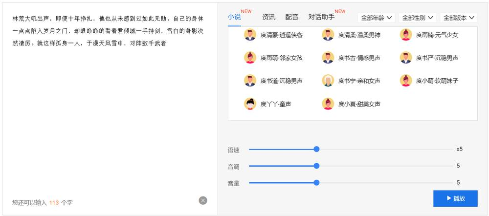
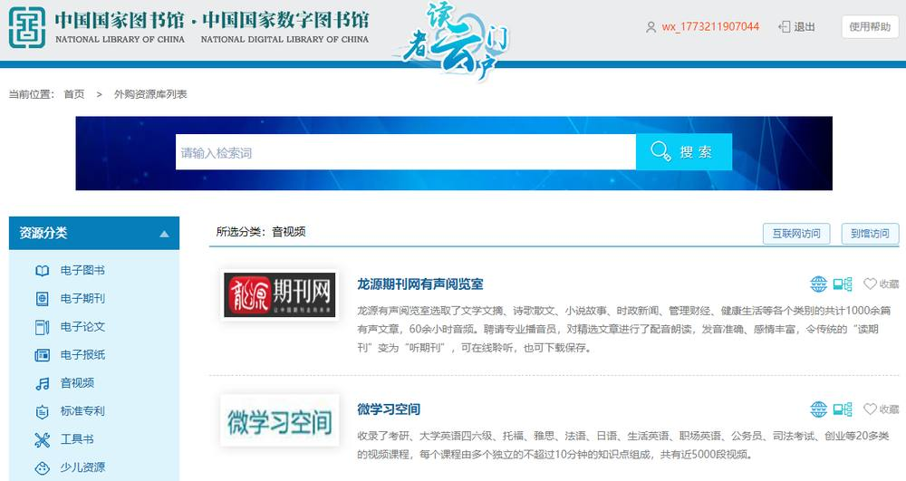
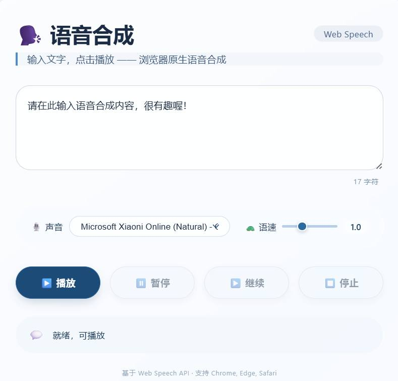

第 1 页 · 2 语音合成
2 语音合成

模块3：感知人机语音交互


第 2 页 · 幻灯片

第 3 页 · 语音合成是如何实现的呢？

语音合成是如何实现的呢？
第 4 页 · 语音合成系统示意图
语音合成系统示意图
一、语音合成系统
语音合成就是让机器能将文字信息转化为可听的声音信息，即让机器像人一样抑扬顿挫“说话”。
三个核心部分
第 5 页 · 一、语音合成系统
一、语音合成系统
一是文本正则化，即针对日期、时间、数字、货币、缩写等非标准文本形式进行标准化转换，将它们转换为可以读出来的形式
1
文本分析
二是分词，通过词典匹配、统计模型等算法将连续的文本字符串切分成有意义的词语单元
2
三是词性标注，为分词后的每个词语标注词性，为韵律重音判断提供支撑
3
四是多音字/词消歧，结合上下文语义和语法结构确定多音字的正确读音
4
如何合成
语音呢？
第 6 页 · 一、语音合成系统
一、语音合成系统
韵律处理
文本分析后的文本信息
韵律轮廓信息
基于音高、音长、音强、停顿等基本声学特征
第 7 页 · 一、语音合成系统
一、语音合成系统
声学处理
文本分析后的精细化语言学特征信息
韵律轮廓信息
语音合成方法
声学模型
自然语音波形
第 8 页 · 二、语音合成方法
二、语音合成方法
语音合成技术：就是将文本转换为自然流畅语音的核心技术。
基于拼接的语音合成方法
1
第 9 页 · 二、语音合成方法
二、语音合成方法
语音合成技术：就是将文本转换为自然流畅语音的核心技术。
基于参数的语音合成方法
2
第 10 页 · 二、语音合成方法
二、语音合成方法
语音合成技术：就是将文本转换为自然流畅语音的核心技术。
基于深度学习的语音合成方法
3
自动提取声学特征
韵律控制能力强
实现多模态融合
……
突出优势
第 11 页 · 三、语音合成典型应用
三、语音合成典型应用
新闻播报
智能语音客服
第 12 页 · 三、语音合成典型应用
三、语音合成典型应用
小孩与机器狗互动
中国国家图书馆中的电子图书

第 13 页 · 开发一个简单的语音合成程序
开发一个简单的语音合成程序

借助DeepSeek、豆包等AI工具，开发一个语音合成程序

第 14 页 · 开发一个简单的语音合成程序
开发一个简单的语音合成程序

| 关键功能 | 其它要求 |
| 支持多种中文发言 | 界面友好美观 |
| 一次能合成语音的文字不少于500字 | 最好能离线使用 |
| 能调整语速 | 音质比较好 |
| 能选择男声或女声 | 使用简单 |
第 15 页 · 学生分享及教师点评
学生分享及教师点评

| 考核要点 | 分值 | 计分 | 教师点评 |
| 1、你完成任务使用的主要工具？ | 10 | 合理使用AI工具 | |
| 2、与其他同学进行了怎样的充分讨论？ | 10 | 集思广益、团结协助 | |
| 3、你的程序满足关键功能吗？ | 30 | 聚焦核心功能，全力以赴 | |
| 4、其它要求方面，你的程序是否也都满足？ | 20 | 注意细节，精益求精 | |
| 5、你的程序中语音合成是调用哪个应用接口实现的？ | 20 | 举一反三，知其所以然 | |
| 6、其它（含逻辑、表情、主动、清晰、流畅、自信等） | 10 | 能说、亲和、善用、精技 |
第 16 页 · 子任务3：语音提示处理
子任务3：语音提示处理

掷地有声
创享生活